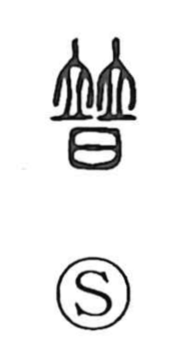

普

Kun: amaneku, amaneshi | On: fu
universal ・ widespread ・ general ・ all
Explanation
普 combines 竝, two people standing side by side, with 曰, a vessel containing written prayers or pledges. The people are the parties taking their places together before the sacred text.
The formation concerns swearing a common oath. Their shared participation gives all and everyone: those who stand together are included in the same undertaking. The repeated human figure makes this collective relation visible.
From the assembly come general, universal, and widely shared. The word extends to something spreading through an entire area or reaching everyone within it. 普 therefore joins the completeness of participation to the breadth of its reach.